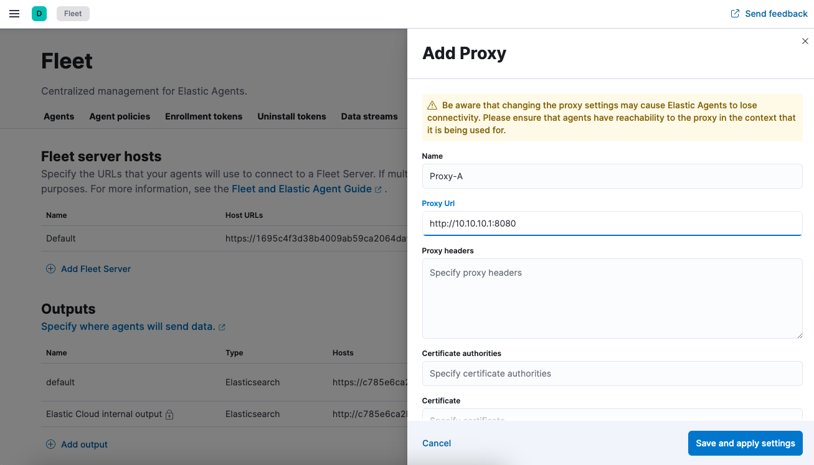
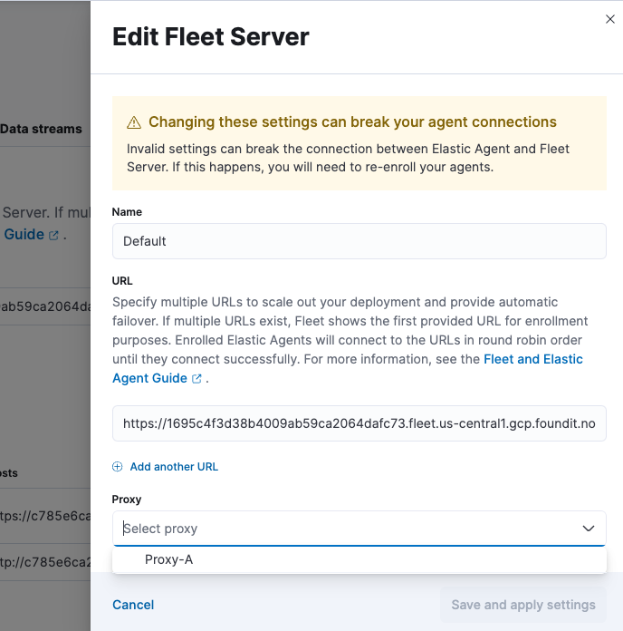
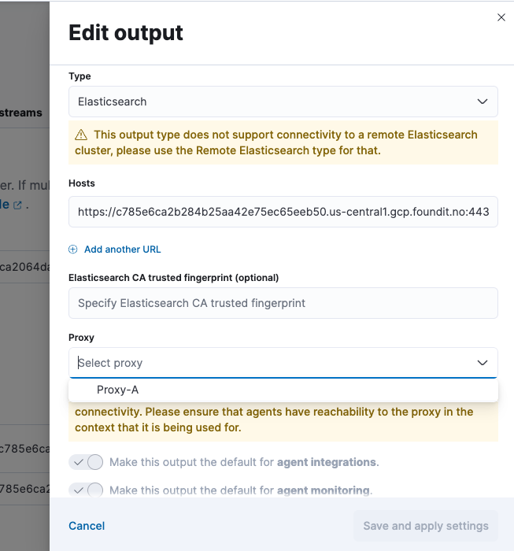
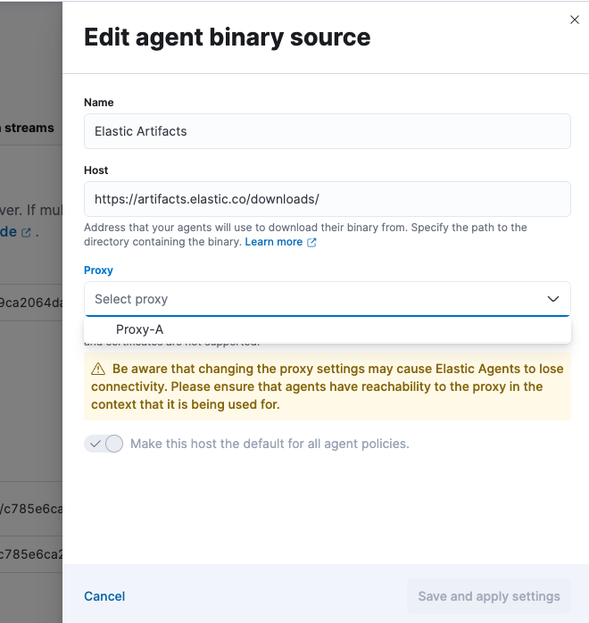

Fleet managed Elastic Agent connectivity using a proxy server
editFleet managed Elastic Agent connectivity using a proxy server
editProxy settings in the Elastic Agent policy override proxy settings specified by environment variables. This means you can specify proxy settings for Elastic Agent that are different from host or system-level environment settings.
This page describes where a proxy server is allowed in your deployment and how to configure proxy settings for Elastic Agent and Fleet. The steps for deploying the proxy server itself are beyond the scope of this article.
Elastic Agents generally egress two sets of connections, one for Control plane traffic to the Fleet Server, the other Data plane traffic to an output such as Elasticsearch. In a similar fashion operators would place Elastic Agent behind a proxy server, and proxy the control and data plane traffic to their final destinations.
Fleet central management enables you to define your proxy servers and then configure an output or the Fleet Server to be reachable through any of these proxies. This also enables you to modify the proxy server details if needed without having to re-install Elastic Agents.
In this scenario Fleet Server and Elasticsearch are deployed in Elastic Cloud and reachable on port 443.
Configuring proxy servers in Fleet for managed agents
editThese steps describe how to set up Fleet components to use a proxy.
-
Globally add proxy server details to Fleet.
- In Fleet, open the Settings tab.
-
Select Add proxy. The Add proxy or Edit proxy flyout opens.
 -
Add a name for the proxy (in this example
Proxy-A) and specify the Proxy URL. - Add any other optional settings.
- Select Save and apply settings. The proxy information is saved and that proxy is ready for other components in Fleet to reference.
-
Attach the proxy to a Fleet Server.
If the control plane traffic to/from the Fleet Server needs to also go through the proxy server, the proxy created needs to also be added to the definition of that Fleet Server.
- In Fleet, open the Settings tab.
- In the list of Fleet Server Hosts, choose a host and select the edit button to configure it.
-
In the Proxy section dropdown list, select the proxy that you configured.
In this example, All the Elastic Agents in a policy that uses this {fleets-server} will now connect to the Fleet Server through the proxy server defined in
Proxy-A.
Any invalid changes to the Fleet Server definition that may cause connectivity issues between the Elastic Agents and the Fleet Server will cause them to disconnect. The only remedy would be to re-install the affected agents. This is because the connectivity to the Fleet Server ensures policy updates reach the agents. If a policy with an invalid host address reaches the agent it will no longer be able to connect and therefore won’t receive any other updates from the Fleet Server (including the corrected setting). In this regard, adding a proxy server that is not reachable by the agents will break connectivity to the Fleet Server.
-
Attach the proxy to the output
Similarly, if the data plane traffic to an output is to traverse via a proxy, that proxy definition would need to be added to the output defined in the Fleet.
- In Fleet, open the Settings tab.
- In the list of Outputs, choose an output and select the edit button to configure it.
-
In the Proxy section dropdown list, select the proxy that you configured.
In this example, All the Elastic Agents in a policy that is configured to write to the chosen output will now write to that output through the proxy server defined in
Proxy-A.
If agents are unable to reach the configured proxy server, they will not be able to write data to the output that has the proxy server configured. When changing the proxy of an output, please ensure that the affected agents all have connectivity to the proxy itself.
-
Attach the proxy to the agent download source
Likewise, if the download traffic to or from the artifact registry needs to go through the proxy server, that proxy definition also needs to be added to the agent binary source defined in Fleet.
- In Fleet, open the Settings tab.
- In the Agent Binary Download list, choose an agent binary source and select the edit button to configure it.
-
In the Proxy section dropdown list, select the proxy that you configured.
In this example, all of the Elastic Agents enrolled in a policy that is configured to download from the chosen agent download source will now download from that agent download source through the proxy server defined in
Proxy-A.
If agents are unable to reach the configured proxy server, they will not be able to download binaries from the agent download source that has the proxy server configured. When changing the proxy of an agent binary source, please ensure that the affected agents all have connectivity to the proxy itself.
-
Configure the Elastic Agent policy
You can now configure the Elastic Agent policy to use the Fleet Server and the outputs that are reachable through a proxy server.
- If the policy is configured with a Fleet Server that has a proxy attached to it, all the control plane traffic from the agents in that policy will reach the Fleet Server through that proxy.
- Similarly, if the output definition has a proxy attached to it, all the agents in that policy will write (data plane) to the output through the proxy.
-
Enroll the Elastic Agents
Now that Fleet is configured, all policy downloads will update the agent with the latest configured proxies. When the agent is first installed it needs to communicate with Fleet (through Fleet Server) in order to download its first policy configuration.
Set the proxy for retrieving agent policies from Fleet
editIf there is a proxy between Elastic Agent and Fleet, specify proxy settings on the
command line when you install Elastic Agent and enroll in Fleet. The settings you
specify at the command line are added to the fleet.yml file installed on the
system where the Elastic Agent is running.
If the initial agent communication with Fleet (i.e control plane) needs to traverse the proxy server, then the agent needs to be configured to do so using the –proxy-url command line flag which is applied during the agent installation. Once connectivity to Fleet is established, proxy server details can be managed through the UI.
If Kibana is behind a proxy server, you’ll still need to configure Kibana settings to access the package registry.
The enroll and install commands accept the following flags:
| CLI flag | Description |
|---|---|
|
URL of the proxy server. The value may be either a complete URL or a
|
|
If specified, all proxy settings, including the |
|
Additional header to send to the proxy during CONNECT requests. Use the
|
For example:
elastic-agent install --url="https://10.0.1.6:8220" --enrollment-token=TOKEN --proxy-url="http://10.0.1.7:3128" --fleet-server-es-ca="/usr/local/share/ca-certificates/es-ca.crt" --certificate-authorities="/usr/local/share/ca-certificates/fleet-ca.crt"
The command in the previous example adds the following settings to the
fleet.yml policy on the host where Elastic Agent is installed:
fleet:
enabled: true
access_api_key: API-KEY
hosts:
- https://10.0.1.6:8220
ssl:
verification_mode: ""
certificate_authorities:
- /usr/local/share/ca-certificates/es-ca.crt
renegotiation: never
timeout: 10m0s
proxy_url: http://10.0.1.7:3128
reporting:
threshold: 10000
check_frequency_sec: 30
agent:
id: ""
When Elastic Agent runs, the fleet.yml file gets encrypted and renamed to fleet.enc.
Elastic Agent connectivity using a secure proxy gateway
editMany secure proxy gateways are configured to perform mutual TLS and expect all connections to present their certificate. In these instances the Client (in this case the Elastic Agent) would need to present a certificate and key to the Server (the secure proxy). In return the client expects to see a certificate authority chain from the server to ensure it is also communicating to a trusted entity.
If mTLs is a requirement when connecting to your proxy server, then you have the option to add the Client certificate and Client certificate key to the proxy. Once configured, all the Elastic Agents in a policy that connect to this secure proxy (via an output or fleet server), will use the nominated certificates to establish connections to the proxy server.
It should be noted that the user can define a local path to the certificate and key as in many common scenarios the certificate and key will be unique for each Elastic Agent.
Equally important is the Certificate Authority that the agents need to use to validate the certificate they are receiving from the secure proxy server. This can also be added when creating the proxy definition in the Fleet settings.
Currently Elastic Agents will not present a certificate for Control Plane traffic to the Fleet Server. Some proxy servers are setup to mandate that the client setting up a connection presents a certificate to them before allowing that client to connect. This issue will be resolved by issue #2248. Our recommendation is to avoid adding a secure proxy as such in a Fleet Server configuration flyout.
In case Kibana is behind a proxy server or is otherwise unable to access the Elastic Package Registry to download package metadata and content, refer to Set the proxy URL of the Elastic Package Registry.